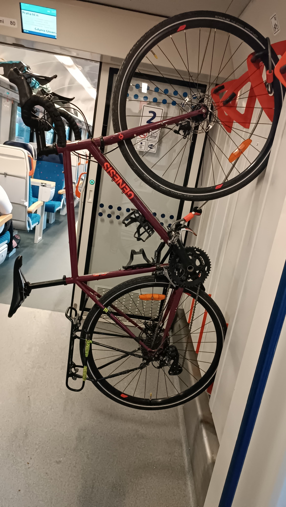

De la Laponie Finlandaise à la France : Rovaniemi → Strasbourg
Hector prendra son temps lors du retour en France et en profitera pour visiter l'Europe de l'Est.
1
Rovaniemi - Helsinki
Train de nuit (compagnie VR)
2
Helsinki - Tallinn
Ferry
3
Tallin - Riga
FlixBus
4
Riga - Vilnius
FlixBus
5
Vilnius - Cracovie
FlixBus
6
Cracovie - Prague
Train de nuit (compagnie Leo express)
7
Prague - Strasbourg
Train de nuit Prague - Offenburg puis train régional Offenburg - Strasbourg (compagnie: Deutsche Bahn)
